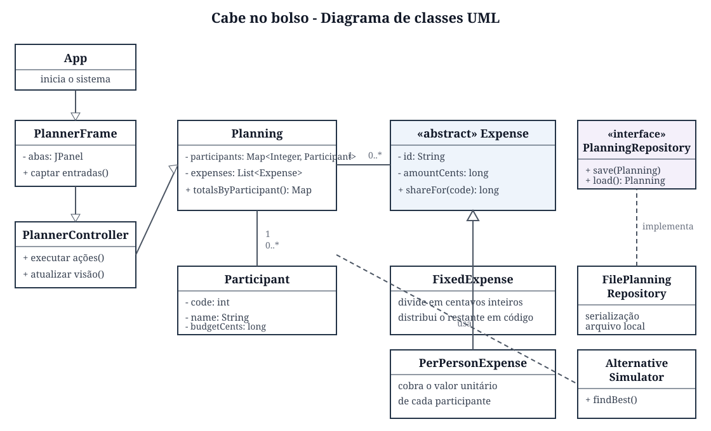

Relatório técnico da atividade final de Programação Orientada a Objetos
A aplicação foi construída como um sistema dirigido pelas regras do domínio, e não apenas por formulários da interface. O principal problema técnico foi evitar que cada tela implementasse cálculos, validações ou persistência de forma diferente. Por isso, o estado e as operações foram concentrados no modelo, enquanto o Swing ficou responsável por entrada e apresentação.
Planning foi escolhido como objeto central porque participantes e despesas precisam ser alterados em conjunto e seus totais dependem dos vínculos atuais. Essa classe reúne o estado agregado e impede que operações inválidas substituam dados válidos. As interfaces restantes recebem objetos já validados e consultam os resultados sem manter cópias de totais.

Participant é uma classe separadaParticipant concentra código, nome e orçamento. A separação evita guardar esse conjunto em listas paralelas e permite identificar uma pessoa pelo código em qualquer vínculo. Também permite que Planning aceite alterações de orçamento sem repetir a regra de validação em vários componentes da interface.
LinkedHashMap<Integer, Participant> foi usado porque o código é a chave natural e deve ser único. Além da busca direta, o mapa preserva a ordem de cadastro. ArrayList<Expense> foi escolhido para despesas porque a aplicação percorre a coleção para calcular totais, editar por identificação e manter a ordem visual. A combinação também facilita impedir vínculo com participante inexistente.
Expense é abstrata porque todas as despesas possuem identificação, descrição, valor, participantes, essencialidade e prioridade, mas o cálculo da contribuição varia. Essa abstração permite que Planning percorra uma única coleção sem saber qual classe concreta está sendo usada.
| Decisão | Problema evitado | Implementação adotada |
|---|---|---|
| Classe abstrata | Lógica de cálculo espalhada em condicionais da interface | Expense.shareFor() define o contrato polimórfico. |
FixedExpense | Repartir um valor fixo sem distribuir os centavos | Quociente inteiro e restos atribuídos pelo código crescente. |
PerPersonExpense | Cobrança correta apenas de participantes vinculados | Retorna o valor unitário somente para o código selecionado. |
O polimorfismo existe na chamada feita pelo modelo para expense.shareFor(code). O método concreto decide como calcular. Essa separação permite incluir outro tipo de despesa no futuro sem alterar o algoritmo de soma de participantes.
Dinheiro não foi representado por double ou float porque operações de divisão poderiam produzir diferenças binárias. Os atributos e argumentos usam long na unidade de centavos, e Money concentra conversão da entrada e formatação da saída. Essa decisão torna cada unidade monetária inteira e torna o cálculo reproduzível.
No rateio fixo, a divisão usa quociente e resto inteiros. Depois da divisão básica, os centavos restantes são entregues aos códigos selecionados em ordem crescente. R$ 100,00 dividido entre os códigos 1, 2 e 3 produz R$ 33,34, R$ 33,33 e R$ 33,33. Isso satisfaz a soma esperada sem depender de arredondamento decimal.
As regras foram implementadas no modelo para que interface, testes e persistência não contornem as validações. Qualquer código não positivo ou repetido, nome vazio, orçamento negativo, descrição vazia, valor não positivo, falta de participantes ou vínculo inexistente gera IllegalArgumentException. A exceção é usada para distinguir problema de entrada de falha de infraestrutura.
| Situação | Implementação | Justificativa |
|---|---|---|
| Cadastro ou edição | Valida antes de criar ou substituir o objeto | Evita estado parcialmente alterado. |
| Participantes repetidos | Conta elementos distintos da lista de vínculos | Impede uma despesa cobrar a mesma pessoa duas vezes. |
| Participante vinculado | Bloqueia a remoção | Preserva a integridade dos códigos referenciados. |
| Erro na interface | Controlador captura e apresenta mensagem | Usuário recebe a causa sem perder o planejamento anterior. |
Na edição, o objeto substituto é construído por createExpense antes de alterar a lista. Só após todas as validações a posição anterior é substituída. Essa transação simples evita parcialmente editar descrição, valor e participantes com dados misturados.
O Swing foi separado do modelo porque tabelas e caixas não precisam conhecer regra de orçamento ou serialização. PlannerFrame apenas coleta dados e apresenta resultados. PlannerController traduz eventos da visão em operações do modelo e coordena o carregamento e o salvamento.
Por exemplo, ao alterar o orçamento de Ana, a visão envia código, nome e novo orçamento ao controlador. Este chama Planning.updateParticipant. O modelo valida e substitui o participante; em seguida, os totais são recalculados a partir das despesas atuais. Se houver falha, a exceção retorna como mensagem e o estado válido permanece.
Essa organização foi usada para limitar efeitos colaterais. Uma ação da interface não precisa modificar diretamente o mapa de participantes, a lista de despesas ou o arquivo.
PlanningRepository separa o contrato da implementação. O controlador depende da interface e pode usar outra origem de dados sem conhecer detalhes do arquivo. FilePlanningRepository implementa o contrato por serialização, de acordo com o requisito e com o estado inteiro das relações de objetos.
Planning, participantes e despesas implementam Serializable e possuem serialVersionUID. Isso permite recuperar tanto os dados quanto os vínculos por código sem reconstruir manualmente cada referência.
O salvamento usa arquivo temporário e substituição do destino. Essa escolha reduz o risco de deixar o arquivo principal parcialmente escrito. Os fluxos são fechados por try-with-resources. Ao carregar, o novo planejamento só substitui o atual depois que a deserialização termina sem exceção. Arquivo ausente ou inválido deixa o planejamento já em uso intacto.
O objetivo extra exige escolher uma combinação viável que maximize a soma das prioridades. Como o limite é dez despesas opcionais, existe apenas um conjunto máximo de 2¹⁰ combinações. A busca por máscara percorre esse espaço de forma completa e determina o maior valor sem heurística incorreta.
Antes da busca, o simulador soma as essenciais. Se excedem qualquer orçamento, não há solução e o programa informa os totais essenciais. Caso contrário, cada máscara mantém ou retira cada opcional. O candidato é válido somente se todos os participantes permanecem dentro do orçamento. Entre os candidatos válidos, vence o maior priorityScore.
O simulador recebe o planejamento original, mas cria listas e mapas temporários. Nenhuma edição é enviada ao objeto persistido. Isso evita que uma sugestão altere os dados usados pelo usuário.
| Pessoa | Orçamento | Total obtido | Comparação |
|---|---|---|---|
| Ana | R$ 70,00 | R$ 75,00 | Excede R$ 5,00 |
| Bruno | R$ 60,00 | R$ 60,00 | Dentro do limite |
| Carla | R$ 70,00 | R$ 75,00 | Excede R$ 5,00 |
| Custo total | R$ 210,00 | Correto | |
A solução preserva o que foi exigido: transporte fixo é dividido em R$ 30,00; almoço unitário custa R$ 20,00 para todos; atividade fixa custa R$ 15,00 para Ana e Carla; sobremesa unitária custa R$ 10,00 para todos. As divergências não ocorreram porque cada teste compara o valor em centavos calculado pelo modelo.
| Cenário | Resultado esperado | Objetivo técnico |
|---|---|---|
| Caso principal | R$ 210,00 e totais individuais | Confirmar composição entre despesa fixa e por pessoa. |
| Centavos | 33,34; 33,33; 33,33 | Confirmar uso de quociente e resto, não arredondamento aproximado. |
| Entradas inválidas | Recusar sem alterar estado | Confirmar atomicidade das validações. |
| Alteração de orçamento | Custo permanece R$ 75,00 em Ana | Separar custo individual de limite financeiro. |
| Exclusão de despesa | R$ 60,00 por pessoa e R$ 180,00 no total | Confirmar recálculo integral após remoção. |
| Persistência | Dados, vínculos e totais recuperados | Confirmar serialização completa. |
| Arquivo inválido | Falha tratada sem troca do estado atual | Confirmar recuperação segura. |
| Simulador | Atividade mantida e sobremesa retirada | Confirmar prioridade máxima viável. |
mkdir -p bin
javac -encoding UTF-8 -d bin $(find src -name '*.java')
java -ea -cp bin tests.PlanningTestA execução validada respondeu: Todos os testes passaram.
Os testes foram projetados para regras centrais e não substituem testes das ações visuais em cada tela. Como evolução, os componentes Swing poderiam receber testes de integração, a confirmação de exclusões poderia exigir ação explícita e o relatório poderia ser exportado em arquivo externo. Persistência em arquivo temporário já reduz inconsistência, mas poderia ganhar nome de arquivo escolhido pelo usuário e backup rotativo.
| Integrante | Implementação | Integração | Validação | Documentação |
|---|---|---|---|---|
| [Nome 1] | [atividade] | [atividade] | [atividade] | [atividade] |
| [Nome 2] | [atividade] | [atividade] | [atividade] | [atividade] |
| [Nome 3] | [atividade] | [atividade] | [atividade] | [atividade] |
| [Nome 4] | [atividade] | [atividade] | [atividade] | [atividade] |
ORACLE. The Java Tutorials: Collections and Swing. Disponível em: https://docs.oracle.com/javase/tutorial/. Acesso em: 22 nov. 2026.
ORACLE. Serializable and Java Object Serialization. Disponível em: https://docs.oracle.com/javase/tutorial/javabeans/advanced/index.html. Acesso em: 22 nov. 2026.
Repositório do projeto: https://github.com/ASCX002/planejador-de-despesas.